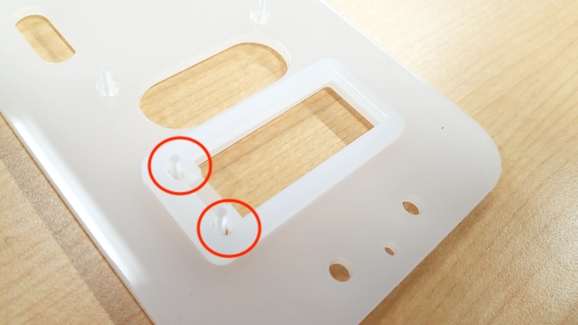
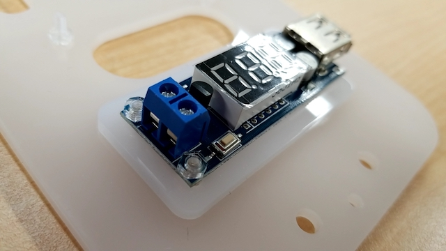
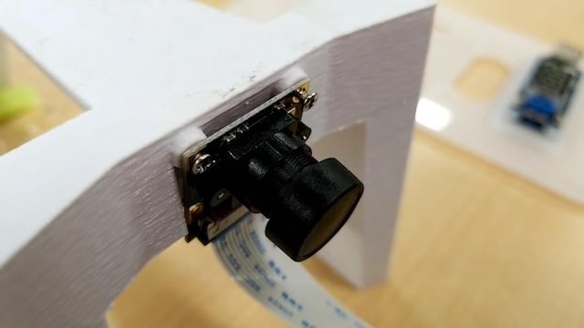
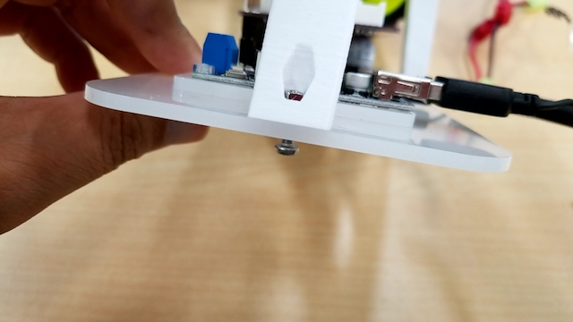
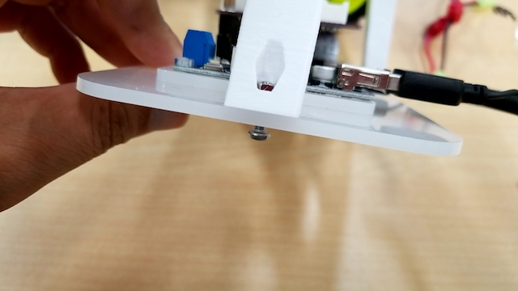
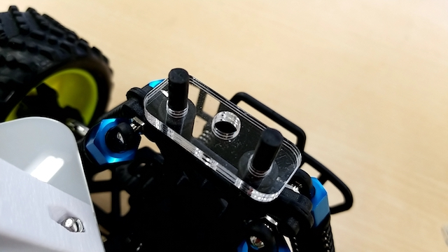
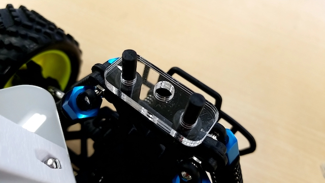
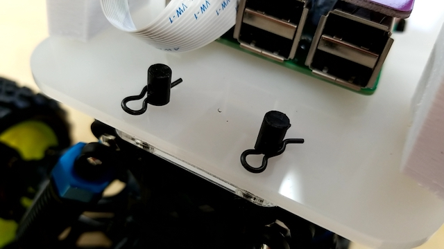

組み立て
Donkey Carのパーツ一覧
| 項目 | 内容 |
|---|---|
| 1 | RCカー本体 |
| 2 | Donkey Carアーム |
| 3 | Donkey Carプレート |
| 4 | Donkey Board |
| 5 | 降圧型変換器内蔵電圧計 |
| 6 | RaspberryPi3 |
| 7 | PiCamera |
| 8 | SDカード |
| 9 | USBケーブル |
| 10 | バッテリー3又ケーブル |

Donkey Car組み立て
０、下準備
RCカー
ボディマウントエクステンションを付け直す。
DonkeyCarプレートを固定できる高さを確保する（４箇所）。
RaspberryPi
SDカードをセットする。
１、DonkeyCarプレートにRaspberryPiを固定するネジを取り付ける。

使用ネジM2.8-10mmネジ＋ナット x４
裏からネジを立てるように固定する。
２、降圧型変換器内蔵電圧計を取り付ける。


使用ネジM2.8-10mmネジ＋ナット x2
間にスペーサーを入れて固定する（２箇所）。
３、RaspberryPiにPiCameraを取り付ける。

ハーネスの方向に注意する事。
４、DonkeyCarアームにPiCameraを取り付ける。

ネジが小さいので無くさないように注意する事。
５、RaspberryPiに電源供給用USBケーブルを取り付ける。

６、DonkeyCarプレートにRaspberryPiを取り付ける。

方向に注意する事。
７、手順５で取り付けたUSBと降圧型変換器内蔵電圧計を繋げる。

8、DonkeyBoardをRaspberreyPiに取り付ける。

9、プレートにアームを固定する。
 

使用ネジ M3-10mm + ナット
アームの先にナットをはめ込み、下からネジで固定する。(前２箇所 後１箇所）
１０、サーボケーブルとモーターケーブルをDonkeyBoardに取り付ける。

差し込むピンの場所と方向に注意する事。（黒＝GND）
１１、プレートスペーサーを取り付ける。
 

前と後ろで形状が違うので注意する事。
１２、バッテリー３又ケーブルを取り付ける。
この時RCカー本体の電源がOFFになっている事。
１３、降圧型変換器内蔵電圧計に３又ケーブルを取り付ける。

プラスマイナスの向きに注意する事。
１４、プレートをRCカー本体に固定する。

４箇所のボディマウントエクステンションに固定ピンを取り付ける。
１５、完成